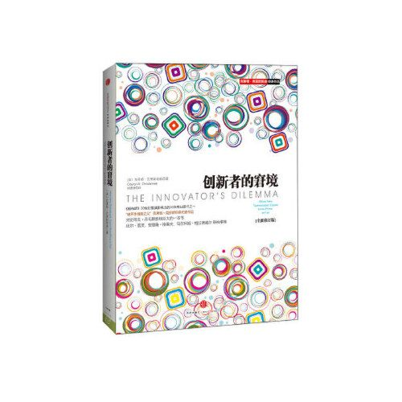

《创新者的窘境》读书笔记

这本书主要探讨的是，企业在遭遇某种形式的市场变化和技术变革时，为什么无法继续保持它们的行业领先地位。这里所说的不是普通企业的失败，而是一些领先企业（那些曾让许多管理者艳羡不已且竞相效仿的，因其优秀的创新和执行能力而闻名遐迩的企业）的失败。这些企业管理良好，锐意提高竞争力，认真倾听客户意见，积极投资新技术研发，却仍然丧失了市场主导地位的企业。
这本书提出了一种观点，即良好的管理正是导致领先企业马失前蹄的主因。许多目前得到广泛认可的良好的管理原则，实际上只适用于某些情况。有时，不采纳客户的意见，投资研发利润率较低、性能较差的产品，并且大举进军小型新兴市场（而不是主流市场）反倒是正确之举。
《创新者的窘境》一书为我们揭示了这背后的底层逻辑，在缓慢发展或快速变化的环境下,为制造业和服务业的众多管理者、顾问和学者提供帮助。
延续性技术与破坏性技术
克里斯坦森提出了持续性创新和破坏性创新这两种不同类型的创新。
延续性技术是指那些改进现有产品、服务和技术的创新。这种技术创新通常是基于已有的技术和市场需求的改进，旨在提高产品性能、功能或效率，以满足现有客户的需求。延续性技术的目标是在现有市场中保持竞争优势，提供更好的产品或服务。
延续性技术的特点包括：
- 基于已有技术的改进和增强。
- 针对现有市场和现有客户的需求。
- 通常由主流企业主导，因为它们已经建立了市场地位和客户基础。
- 增量式的改进，不会对现有市场格局产生巨大的影响。
破坏性技术是指新兴技术或新产品的出现，通过满足新市场或边缘市场的需求，最终取代传统产品和服务。破坏性技术往往以低成本、简化或创新性的方式进入市场，开始时可能在较小的市场份额中竞争，但随着不断改进和成熟，最终改变了整个行业的格局。
破坏性技术的特点包括：
- 基于全新的技术或商业模式，打破了现有的规则和常规。
- 针对新市场或边缘市场的需求，通常是未满足或被忽视的市场。
- 由新兴企业或小型企业引领，因为它们更具灵活性和创新性。
- 可能在早期阶段被主流企业忽视，但逐渐成长并最终颠覆传统行业。
总体来说，延续性技术是在现有市场中改进产品和服务，以保持竞争优势，而破坏性技术则是通过满足新市场需求并颠覆传统行业。这两种技术创新在对待市场、竞争策略和影响力方面有着不同的特点和战略导向。
价值网络
书中提到了”价值网络”这个概念。”价值网络”指的是在特定行业或市场中相互关联的各个参与者、组织和活动之间的关系网络。这些参与者和组织共同创造、交换和提供价值，形成了一个复杂的生态系统。
价值网络不仅包括供应商、生产商和分销商，还包括消费者、合作伙伴、竞争对手以及其他相关利益相关者。这些参与者通过相互合作、交易和竞争来共同构成一个完整的价值网络。
在一个典型的价值网络中，不同的参与者扮演着不同的角色和功能。例如，供应商提供原材料和组件，生产商进行加工和制造，分销商负责产品的销售和分发，消费者作为最终用户使用产品或服务。每个参与者在这个网络中都有特定的职责和利益。
克里斯坦森指出，理解和适应价值网络对于创新和竞争至关重要。当发生破坏性创新时，新技术或新产品的出现可能会改变整个价值网络的动态。新的参与者可能会进入市场，旧有的参与者可能会失去地位。因此，企业需要认识到价值网络的复杂性，并根据市场变化和创新机会进行战略调整。
窘境产生的根源
窘境产生的根源可以归结为以下几个方面：
- 过度专注于现有客户需求：企业在追求业绩和稳定增长时，往往过度专注于满足现有客户的需求。他们将大量资源投入到改进和优化现有产品和服务上，以满足现有客户的期望。这种过度专注会导致企业忽视了新兴技术和市场的潜在机会，使其对破坏性创新视而不见。
- 技术和市场变革的不可预见性：破坏性创新通常伴随着技术和市场变革，这些变革往往是难以预测和理解的。企业在面对不确定性和风险时，往往更倾向于继续沿袭已有的商业模式和成功路径，而不愿意冒险探索新的领域和新的商业模式。
- 组织结构和文化的限制：大型企业通常有着庞大的组织结构和复杂的决策层级，这种结构可能会阻碍创新的实施。创新往往需要敏捷、快速决策和灵活的组织文化，而大型企业往往受到内部政治、官僚主义和保守主义的制约。
- 利润和投资回报的压力：面对日益激烈的竞争和投资者的要求，企业往往面临着对利润和投资回报的压力。在这种情况下，企业更倾向于专注于可靠的、快速带来收益的项目，而对于长期投资和创新可能存在的风险和不确定性则持保留态度。
这些根源因素共同作用，使得企业在面对破坏性创新时陷入窘境。企业需要意识到这些挑战并寻找应对之策，例如建立独立的创新团队、改变组织结构和文化、探索新的市场和客户群体等，以应对破坏性创新带来的机遇和挑战。
应对窘境
为了更好地应对破坏性创新和创新者窘境，企业可能需要创建专门的组织或团队。这样做的原因包括：
- 专注和优先级：传统的组织结构和流程通常是为了管理和优化现有的业务而设计的，而不太适合创新和破坏性的探索。通过创建专门的组织，可以将创新的目标、资源和优先级置于前所未有的重要位置，确保创新项目得到足够的关注和支持。
- 灵活性和快速决策：创新往往需要灵活的组织结构和快速的决策机制。专门的创新团队可以避免传统组织的冗长决策层级，减少决策的复杂性和时间成本，从而更快地响应市场变化和采取行动。
- 创新文化和思维：专门的创新组织可以培养一种积极的创新文化和思维方式。它可以鼓励员工提出新的想法和尝试新的方法，提供适当的培训和资源支持，打破传统思维模式和约束，从而促进创新的发展和实施。
- 风险管理和试错：破坏性创新往往伴随着更高的不确定性和风险。通过创建专门的创新组织，企业可以更好地管理和控制创新过程中的风险，并容忍试错和学习的机会。这种试错的文化有助于快速迭代和改进创新项目，增加成功的概率。
- 外部合作和开放创新：专门的创新组织可以更容易地与外部的创新生态系统进行合作和开放创新。它可以与创新初创企业、研究机构、行业合作伙伴等建立联系，共享资源和知识，获取新技术和创新思维，拓展创新的边界。
小结
《创新者的窘境》通过多个行业的案例，展示了成功和失败的实例，并从中提取了教训。通过对这些案例的研究，可以了解到成功创新者是如何应对挑战和变革的，以及失败者是如何陷入窘境的。这些案例研究为读者提供了实际操作的参考，帮助他们更好地理解创新的机会和风险。
综上所述，《创新者的窘境》通过深入剖析创新和竞争的本质，为读者提供了重要的洞察力和指导，帮助他们在不断变化的市场环境中保持竞争优势。这本书不仅适用于管理者和企业家，也对对创新和变革感兴趣的任何人都具有重要价值。